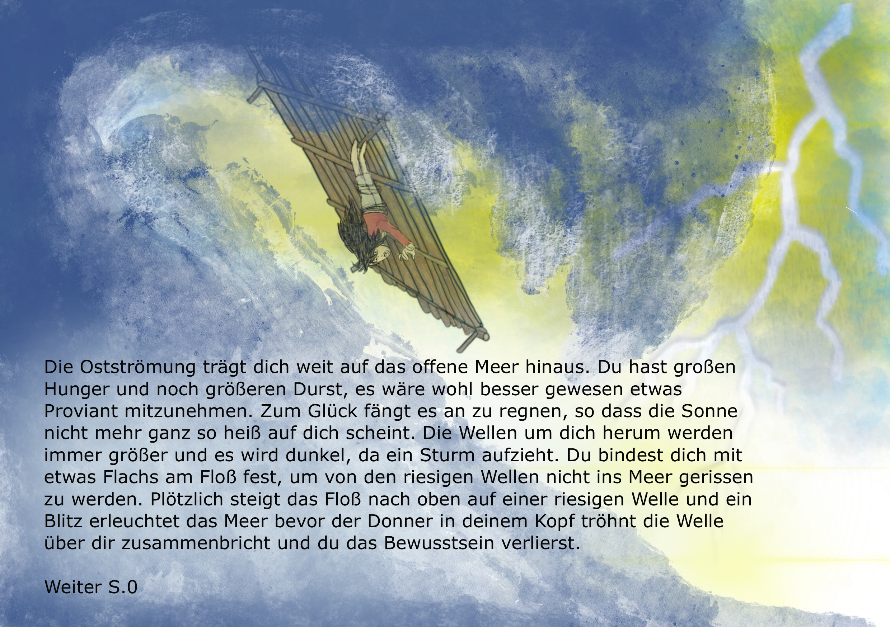

Die Ostströmung trägt dich weit auf das offenere Meer hinaus. Du hast großen Hunger und noch größeren Durst, es wäre wohl
besser gewesen etwas Proviant mitnehmen sollen. Zum Glück fängt es an zu regnen, so dass die Sonne nicht mehr ganz so heiß
auf dich scheint. Die Wellen um dich herum werden immer größer und es wird dunkel da ein großer Sturm aufzieht.
Du bindest dich mit etwas Flachs am FLoß fest, um von den riesigen Wellen nicht ins Meer gerissen zu werden. Plötzlich steigt
das Floß nach oben auf einer riesigen Wellen und ein Blitz erleuchtet das Meer bevor der Donner in deinem Kopf dröhnt und
die Welle über dir zusammenbricht und du das Bewusstsein verlierst.
weiter (Seite 1)